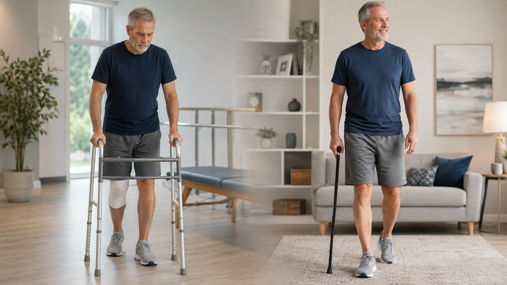
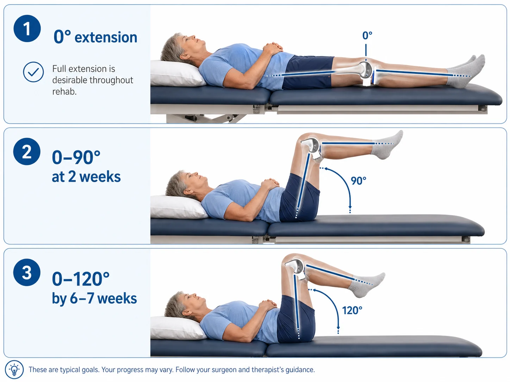
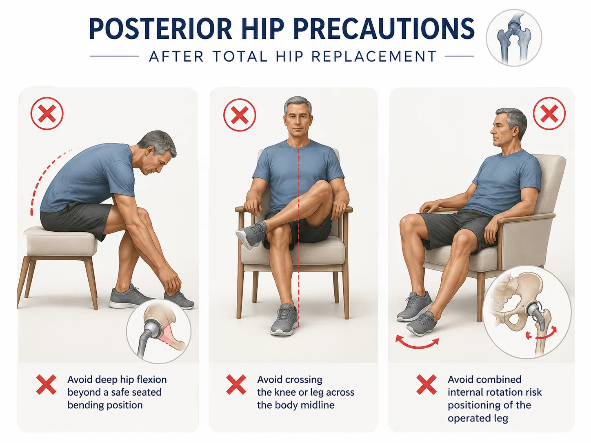

Hip Replacement
Total hip replacement for advanced hip arthritis or joint damage. Dr. Barnes uses a posterior hip approach, the approach he trained in and is most comfortable performing.
Explore hip care →Arthroplasty care for hip, knee, and shoulder arthritis with shared decision-making, clear expectations, outpatient recovery when appropriate, and modern planning tools for the right patient.
Outpatient focusAbout 95% of replacements outpatient
Mako optionHip and knee planning when appropriate
Arthroplasty-specificHip, knee, shoulder, reverse shoulder
Real expectationsRecovery milestones, precautions, and limits
Replacement becomes a serious discussion when arthritis or joint damage limits walking, sleep, work, recreation, or basic daily activities despite reasonable nonsurgical treatment.
The decision is not based on age alone. It depends on your symptoms, X-rays, overall health, goals, support at home, and whether the expected benefit is worth the recovery and surgical risk.
Symptoms are affecting daily life, sleep, stairs, walking, work, or hobbies.
X-rays or other imaging show advanced cartilage loss or joint destruction.
Therapy, injections, bracing, medications, or activity changes are no longer enough.
This hub page stays focused on arthroplasty. The individual joint pages go deeper into hip, knee, and shoulder conditions.
Total hip replacement for advanced hip arthritis or joint damage. Dr. Barnes uses a posterior hip approach, the approach he trained in and is most comfortable performing.
Explore hip care →Total knee replacement, and partial knee replacement for selected patients, replaces the worn cartilage with a new bearing surface. Motion milestones are especially important after surgery.
Explore knee care →Anatomic shoulder replacement and reverse shoulder replacement are considered based on arthritis pattern, bone quality, and rotator cuff function.
Explore shoulder care →Every replacement is a balance of diagnosis, implant choice, surgical technique, rehabilitation, and patient expectations. Dr. Barnes aims to help patients understand the tradeoffs before deciding on surgery.
The goal of joint replacement is to remove the worn-out cartilage and arthritis and give the joint a new bearing surface. The components Dr. Barnes uses commonly include titanium, cobalt chrome, and high-density plastic.
Some implants are cemented. Others use bone on-growth or in-growth fixation when bone density and surgical factors make that appropriate.
These are practical expectations Dr. Barnes commonly discusses with patients. Individual recovery depends on the operation, health, therapy, and adherence to instructions.
Most hip and knee patients use a walker for about 2 weeks, then a cane for about 4 more weeks.
Most patients are back to many activities they want to do by 3 to 4 months.
No pool, hot tub, bath, lake, or river submersion until about 30 days after surgery.
If not already on an anticoagulant, aspirin 325 mg daily for 4 weeks is commonly recommended.
Outpatient replacement is built around safe mobility, pain control, home support, and clear instructions.

Walking aids are part of a planned progression, not a setback.
This is the practical detail patients often want before surgery.
Some numbness on the outside/lateral aspect of the knee is normal. Range-of-motion goals are important: 0–90° around 2 weeks and 0–120° by about 6–7 weeks. If motion falls behind, manipulation under anesthesia may be discussed.
Dr. Barnes recommends posterior hip precautions long-term to reduce dislocation risk, especially avoiding deep flexion, crossing the knee across midline, and extreme internal rotation positions.
Reverse shoulder replacement can improve pain and overhead function, but patients may lose some internal and external rotation strength.

Full extension remains desirable throughout rehab, while flexion should progressively improve.

Sitting is acceptable when the knee stays on its own side and does not cross the body midline.
Implants matter, but the recovery plan matters too. Therapy, swelling control, wound care, walking progression, motion goals, and realistic activity expectations are all part of the operation’s success.
Dr. Barnes does not routinely replace both sides at the same time. His preference is for one side to heal for about 3 months before performing the other side.
This approach allows the first side to become a more reliable support leg and helps keep recovery more manageable.
Driving is not determined by a fixed date alone. Dr. Barnes asks patients to think through two practical tests:
If either answer is concerning, you are not ready to drive yet. Driving also depends on the side of surgery, use of narcotic pain medication, strength, coordination, and reaction time.
Practical answers for common arthroplasty questions.
You may be ready when pain, stiffness, and loss of function are affecting daily life and nonsurgical treatment no longer gives acceptable relief.
No. Approximately 95% of Dr. Barnes’ joint replacements are outpatient when the patient, procedure, and support situation are appropriate.
No surgeon can responsibly guarantee a pain-free replacement. The goal is meaningful pain relief and improved function, and Dr. Barnes aims for the best result every time.
Most hip and knee replacement patients use a walker for about 2 weeks, followed by a cane for about 4 more weeks.
No submerging underwater until about 30 days after surgery and the incision is appropriately healed.
No. Dr. Barnes prefers the first side to heal for about 3 months before replacing the other side.
Some movement, clicking, or a different feel can occur because metal and high-density plastic feel different than native bone and cartilage. Concerns should still be evaluated if symptoms are painful, progressive, or associated with swelling or instability.
A common goal is 0–90° at about 2 weeks and 0–120° by about 6–7 weeks. Full extension is desirable throughout the rehab process.
Dr. Barnes recommends long-term awareness of posterior hip precautions, especially avoiding deep flexion, crossing the knee across midline, and extreme internal rotation positions.
Dr. Barnes does not give airport identification cards for joint replacements. TSA generally does not rely on them and will screen based on standard security procedures.
Antibiotics are recommended for invasive procedures larger than a routine teeth cleaning after joint replacement.
Reverse shoulder replacement can improve pain and overhead function, but patients may lose some internal and external rotation strength.
Schedule an evaluation in Lake Havasu City to review your symptoms, imaging, treatment options, and recovery expectations.